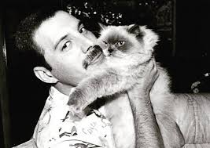
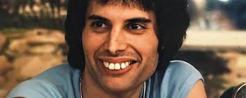
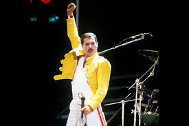
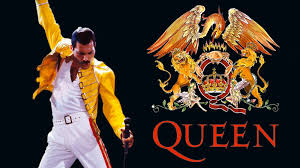
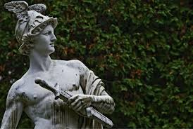
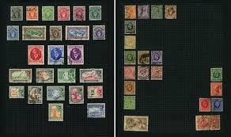
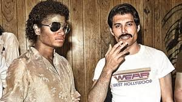
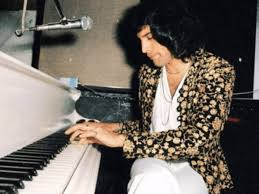

Por trás dos holofotes e da presença de palco eletrizante, a vida de Freddie Mercury guardava segredos e peculiaridades que iam muito além do que os olhos do público podiam ver. Mesmo sendo uma das figuras mais fotografadas e comentadas do mundo, o vocalista do Queen tinha um lado reservado, cheio de hábitos únicos, talentos ocultos e histórias surpreendentes que pouca gente conhece. Descubra a seguir alguns dos fatos mais fascinantes e curiosos sobre a vida íntima e criativa desse ícone eterno.
Freddie amava tanto seus gatos que dedicou seu álbum solo a eles e ligava para casa para "conversar" com os bichanos enquanto viajava. Após a morte de um de seus gatos, ele escreveu a música "Crazy Little Thing Called Love" em sua homenagem.

Freddie nasceu com quatro dentes extras na parte de trás da boca (o que empurrava seus dentes da frente para frente). Apesar de ter dinheiro de sobra para corrigir o sorriso e de ser um pouco tímido com sua aparência, ele sempre se recusou a fazer cirurgias ortodônticas. Ele tinha um medo profundo de que a operação pudesse alterar o formato da sua boca e estragar o seu alcance vocal único.

A famosa jaqueta amarela que Freddie usou nos shows de Wembley em 1986 — e que se tornou um dos seus visuais mais marcantes — foi criada pela figurinista Diana Moseley. A cor amarela vibrante foi escolhida de propósito para que Freddie se destacasse perfeitamente contra a escuridão do palco e os efeitos de luz, garantindo que até as pessoas na última fileira do estádio conseguissem enxergá-lo claramente.

Além de ser um dos maiores cantores da história da música, Freddie Mercury também era um talentoso designer gráfico. Ele criou o logotipo do Queen e projetou várias capas de álbuns, demonstrando seu talento artístico que ia além da música.

O nome "Mercury" foi inspirado no deus romano mensageiro, conhecido por sua velocidade e habilidade de se comunicar. Freddie escolheu esse sobrenome para refletir sua personalidade dinâmica e seu talento para se conectar com o público de maneira rápida e eficaz.

Quando era criança e morava em Zanzibar e na Índia, Freddie tinha o hobby de colecionar selos postais do mundo inteiro. A sua coleção de infância era tão rica e bem organizada que, anos após sua morte, ela foi comprada pelo Museu Postal de Londres e é exibida lá até hoje como um item histórico.

Nos anos 80, Freddie e Michael Jackson se reuniram no estúdio caseiro de Michael em Encino, na Califórnia, para gravar algumas músicas juntos. Eles chegaram a produzir demos de faixas como There Must Be More to Life Than This. No entanto, as sessões foram interrompidas porque os dois tinham estilos de trabalho muito diferentes (reza a lenda que Freddie ficou incomodado porque Michael levou sua lhama de estimação para dentro do estúdio de gravação).

Freddie frequentemente acordava no meio da madrugada com melodias inteiras na cabeça. Como ele tinha medo de esquecer as notas até de manhã ou achava ruim ter que levantar e ir até a sala no frio, ele simplesmente se esticava para trás, ligava o teclado e tocava a melodia ali mesmo, gravando a ideia antes de voltar a dormir.Dizem que foi exatamente assim, meio sonolento e no meio da noite, que ele estruturou os primeiros acordes de várias músicas famosas!
